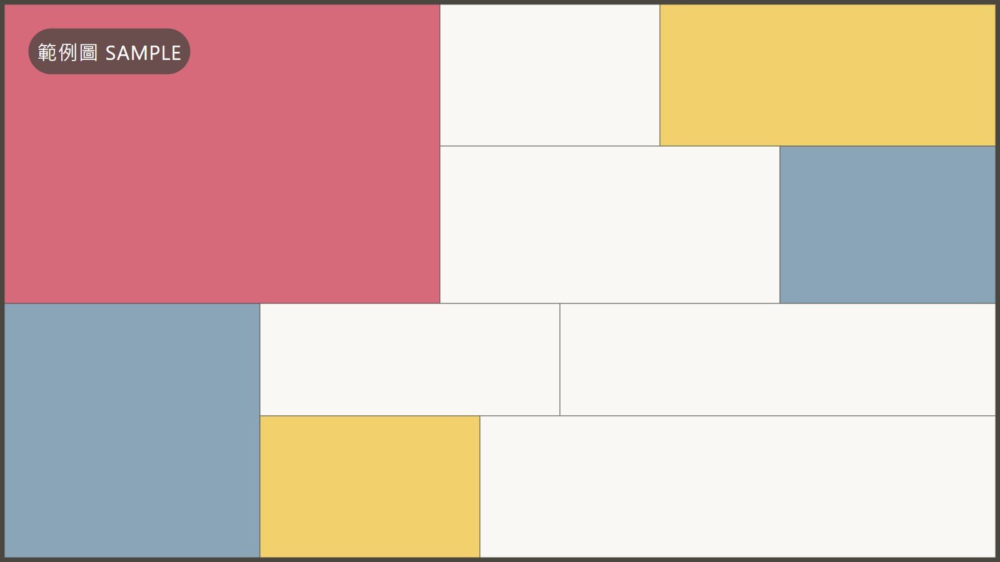
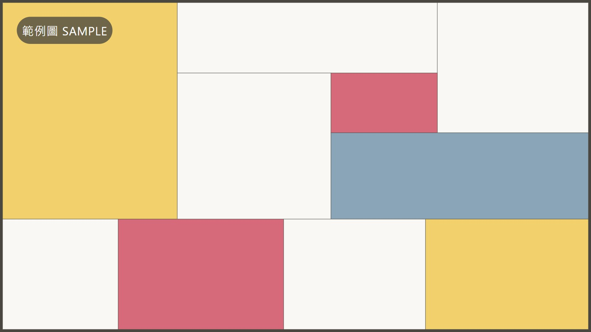
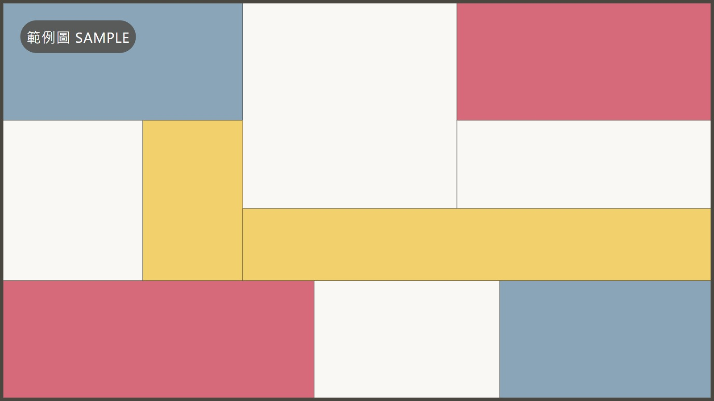

環境教育對兒童具有潛移默化的影響。直線、方塊與矩形組成的幾何形式，能刺激視覺感知，培養孩童的專注力與創造力。
畫作椅將蒙德里安冷抽象畫作的幾何構圖與色彩配置，從平面轉化為立體。懸掛時，是一幅蒙德里安式的幾何畫作；拆解後，化身隨孩子成長調整的兒童家具。透過色彩與幾何形體的組合，讓孩子在動手操作中建立對形狀、色彩與邏輯的認知，讓藝術從平面走進日常。
一幅畫含小／中／大三種尺寸，同時可組出兩把
取下椅子構件後，畫作依舊完整
椅面高度隨孩子成長調整
構件可拆卸、組裝與替換

同一幅畫的構件，平面與立體可自由切換——取下椅子後，畫作依然完整。
點選下方卡片預覽各種模式
懸掛牆面的幾何構圖
高度隨成長調整
收納繪本與玩具
客廳點心台
入口端景
每幅畫內含小／中／大三種尺寸的椅構件，同時可組出兩把，隨孩子成長調整。
滑鼠移到圖片上可查看重點規格點一下圖片可查看重點規格

奶油色系搭配天然色樺木，降低居家壓迫感；傳統榫接工藝，體現 5R 永續原則。憑藉優雅教育美學榮獲 2021 當代好設計獎。

回歸蒙德里安純粹色彩對比，提供極佳的視覺刺激；結構優化後，構件更易拆卸、組裝與替換。目前正於臺中區農業改良場展覽空間展出。
椅子尺寸與適用範圍兩代相同，差別在材質色調、結構件、組裝方式、作品尺寸與總重量。
標紅線的項目代表兩代不同

主設計師 / CO-FOUNDER
「我們希望家具不僅是空間的過客，更是陪伴孩子成長、啟發美感的靈魂伴侶。」

設計顧問 / CO-FOUNDER
「堅持 5R 永續原則與精準的榫接工藝，是我們對地球與下一代最溫柔的承諾。」
Follow our journey on Instagram